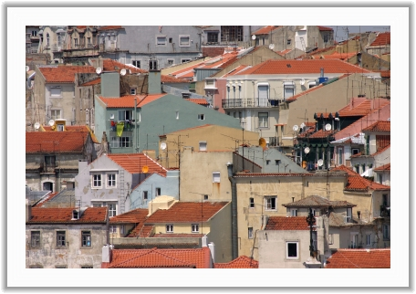

Spremeni kodo in klikni "Naloži stran"
<html> <body> <img src="../slike/te_slike_ni.jpg" alt="Ta slika se je izgubila" /> <br />  <br /> (<em>Foto: Iztok Fajfar</em>) <p>Namesto slike, ki se ni prikazala, se prikaže besedilo lastnosti <kbd>alt</kbd>.</p> <p>Če se zapelješ z miško v okvir fotografije, se bo v okencu z namigom prikazalo besedilo lastnosti <kbd>title</kbd>. Če to lastnost odstraniš, potem samo nekateri brskalniki v okencu z namigom prikažejo besedilo lastnosti <kbd>alt</kbd>. Preveri, ali je tvoj brskalnik med njimi.</p> <p>Spreminjaj lastnosti <kbd>width</kbd> (slov. širina) in <kbd>height</kbd> (slov. višina) elementa <kbd>img</kbd> in opazuj, kaj se dogaja s sliko. Če obe lastnosti odstraniš, se bo prikazala slika v resnični velikosti. Če odstraniš le eno od lastnosti, bo slika ohranila razmerje višine in širine.</p> <p>Lastnostima <kbd>width</kbd> in <kbd>height</kbd> smo podali vrednosti brez enot, kar v primeru slike predstavlja število točk na zaslonu. Takoj za vrednostjo bi lahko pisali tudi znak %, ki označuje odstotek kake druge vrednosti, navadno nadrejenega elementa. Če za širino uporabiš odstotek, se bo velikost slike spreminjala dinamično, čim z miško spreminjaš širino brskalnikovega okna. Poskusi.</p> <p>Pri mnogih drugih lastnostih, ki jim prav tako prirejamo številčne vrednosti, včasih poleg vrednosti pišemo še merske enote, kot na primer <strong>mm</strong> (milimeter), <strong>cm</strong> (centimeter) ali <strong>px</strong> (točka na zaslonu).</p> <p>Element <kbd>img</kbd> je vrstični element, zato ne povzroči preloma vrstice. Poskusi napisati nekaj besedila takoj za njim in opazuj, kako brskalnik to besedilo prikaže.</p> </body> </html>